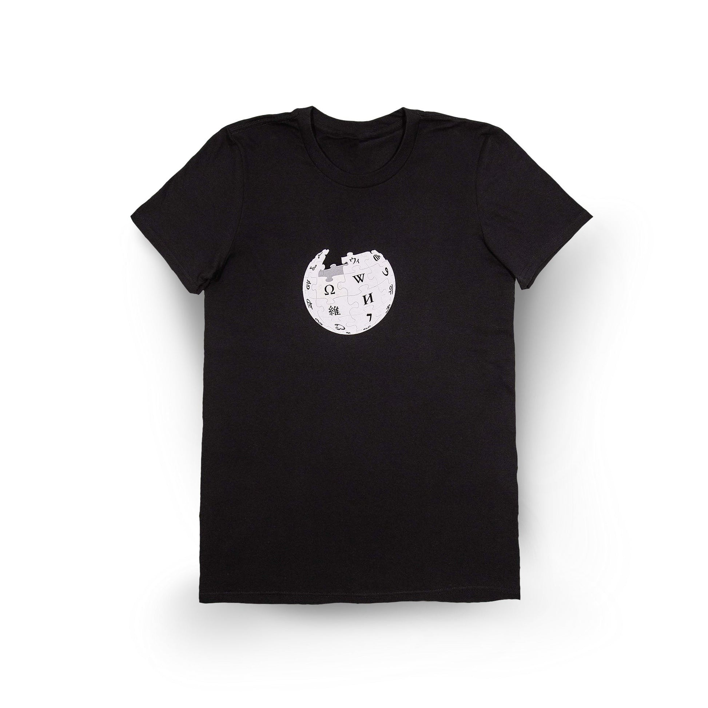

王健斌 · 吉林艺术学院硕士在读
走访跨境电商商家时，我发现选款人员要逐页找图、辨别正反面。我用 Codex 做了两个工具，一个帮商家挑图，一个用来弄清 AI 为什么挑错。

输入 T-shirt 等关键词，在两家样店查看哪些图被收录、跳过或留待核对，再下载素材包。桌面 Chrome 扩展还可以在真实店铺运行。
用 14 张图回放一次盲测。切换筛选档位，逐张看哪张背面图被排除、哪张正面图也被漏掉，以及为什么更严格仍然可能误收。